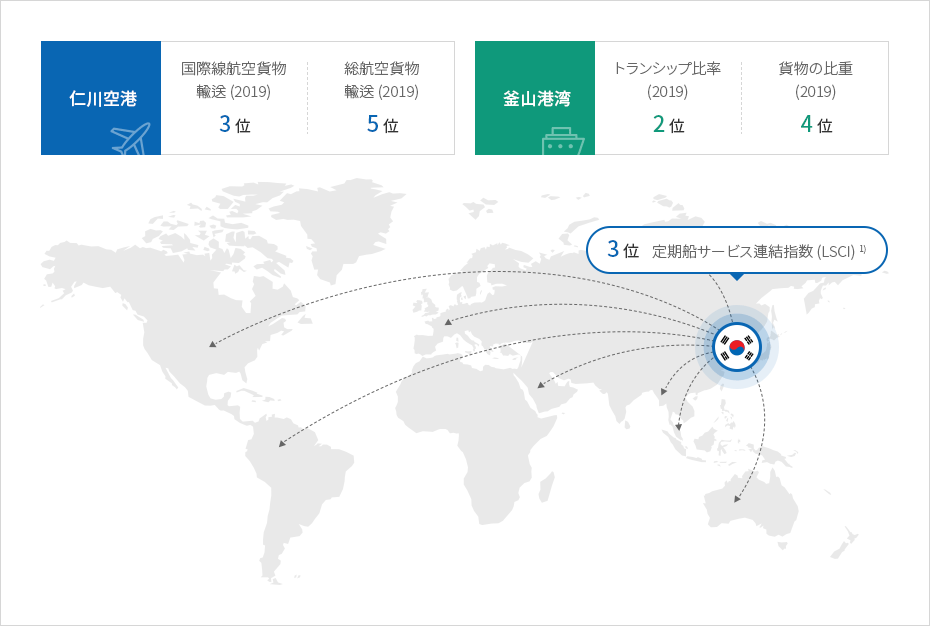
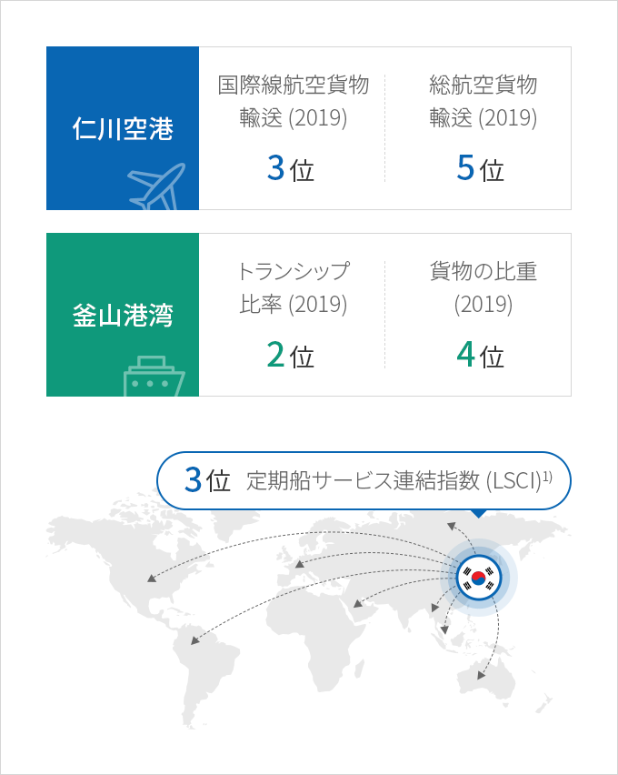

物流
- Home
- Why KOREA
- インフラ
- 物流
東アジアの中心、物流ハブ・コリア
韓国は全世界の主要国及び都市を迅速につなぐ最上の物流インフラを備えている。
中国、日本と隣接しているだけでなく、海洋、航空でアジア太平洋地域とユーラシア‐米州大陸を結ぶ物流の中核地域に位置している。
今後は、ユーラシア大陸を陸上で貫通するルートを構築する潜在力も有している。
中国、日本と隣接しているだけでなく、海洋、航空でアジア太平洋地域とユーラシア‐米州大陸を結ぶ物流の中核地域に位置している。
今後は、ユーラシア大陸を陸上で貫通するルートを構築する潜在力も有している。



(3位) 海上輸送連結程度
-
仁川空港
- (3位) 国際線航空貨物輸送(2019)
- (5位) 総航空貨物輸送
-
釜山港湾
- (2位) トランシップ比率(2019)
- (4位) 貨物の比重

※ 出所 : 国際連合貿易開発協議会 (UNCTAD) (2019)